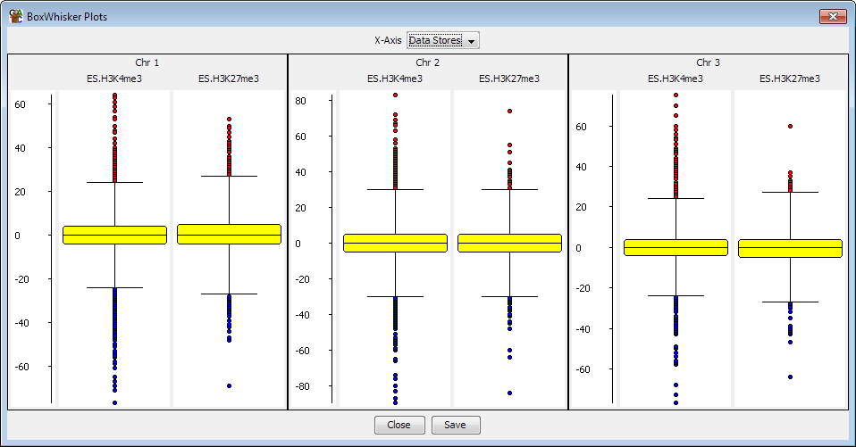

The BoxWhisker Plot is a view designed to let you compare the distribution of probe values across several data stores, or several probe lists across a single data store.

To create a BoxWhisker plot select Plots > Box Whisker Plot from the main menu. You can then choose whether you want the plot to show all visible data stores for the currently active probe list or whether you want to select a set of probe lists to plot for the currently active data store. The plot window will appear immediately and the individual plots will appear as they are calculated. This may take a few seconds for larger data sets.
The boxwhisker plot shows several different pieces of information.
Where multiple plots are drawn they will all be placed onto the same scale so you can quickly compare between them.
Within the BoxWhisker plot menu you can choose to plot either:
If you want to extract the list of outliers from the boxwhisker plot you can use the BoxWhisker Filter to pull them out as a probe list.